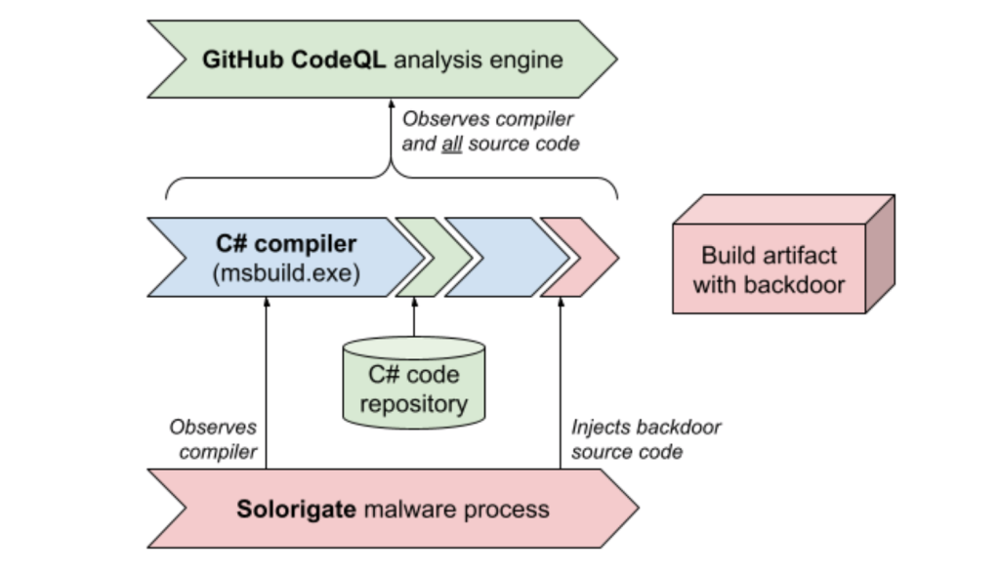
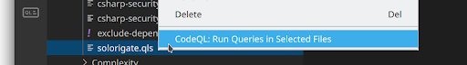
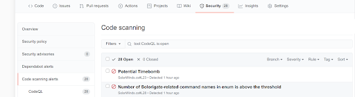

- 原文地址：Using GitHub code scanning and CodeQL to detect traces of Solorigate and other backdoors
- 原文作者：Bas van Schaik
- 译文出自：掘金翻译计划
- 本文永久链接：https://github.com/xitu/gold-miner/blob/master/article/2021/using-github-code-scanning-and-codeql-to-detect-traces-of-solorigate-and-other-backdoors.md
- 译者：Badd
- 校对者：PassionPenguin，greycodee
上个月，CodeQL 安全社区的一位成员向 C# 代码库贡献了关于 CodeQL 复合查询的代码，这有助于许多组织机构评估他们是否受影响于 SolarWinds 遭到的对全球关键网络基础设施的攻击。这次攻击也被称为 Solorigate（微软的说法）或 Sunburst（FireEye 的说法）。在本文中，我们会阐释 GitHub 高级安全客户该如何使用 CodeQL 查询来排查他们的构建设施是否被恶意程序注入。
2020 年 12 月上旬，安全咨询公司 FireEye 公布了关于 SolarWinds 受到的攻击的详细信息。SolarWinds 是一家向多个组织机构提供网络监控工具的公司，其客户包括美国政府。黑客在 SolarWinds 的网络监控产品 Orion 中成功地植入了后门程序，而 SolarWinds 的大量客户都装载了 Orion。攻击者随后获取了部署着 Orion 产品的网络的访问权限。
过去几年里，Microsoft 一直在用 CodeQL 检测漏洞和数据泄露风险。这次关于 CodeQL 查询的贡献代码主要是为了应对这次的攻击，并优化之前的检测方式。
这类恶意程序在构建系统中植入后门，以便于在发布的产品中的注入恶意代码，方便恶意程序的传播，进而危及使用产品的用户。该恶意程序甚至会监控对 msbuild.exe（Microsoft 构建引擎）的调用。通过给自己开通调试特权，构建劫持程序能够把额外的恶意代码注入到构建进程中。这意味着，虽然代码库本身不包含任何恶意代码或其他痕迹，但构建出来的产品却确实带有恶意程序。在这份 Crowdstrike 提供的技术分析中，有关于构建劫持过程更加详尽的解释。
GitHub CodeQL 是一个语义代码分析引擎，它使用**查询（Query）**来分析源代码并发现非预期的模式。例如，CodeQL 能追踪来自存在潜在危险（比如一个 SQL 声明中的字符串拼接会导致 SQL 注入漏洞）的不可信来源（比如一个 HTTP 请求）的数据。
在（编译后语言的）构建过程中，CodeQL 查询可以运行在由它在生成的源代码库中。因而，CodeQL 会密切观察构建过程，并随之提取用于构建二进制文件的相关源码。提取过程的产物是一个关系形式的源码的结构化表示 —— 一个 CodeQL 数据库。
如果一个构建服务器被 Solorigate 恶意程序的构建劫持组件植入了后门，那么恶意程序会在编译时注入额外代码。如果 CodeQL 在被感染的服务上观察构建进程，它会从真正的源码中提取被注入的恶意源码。产生的 CodeQL 数据库会因此包含 Solorigate 恶意源码的痕迹。请注意，如果你的 CodeQL 数据库生成于没有被感染的机器，那么这个数据库就不会包含任何被注入的代码。

Microsoft 团队贡献的 CodeQL 查询代码会检测被恶意注入的 C# 代码的模式。运行这些查询的最佳方式，是在可能受影响的服务器上手动创建一个 CodeQL 数据库，并用 VS Code 的 CodeQL 插件分析这个数据库。
你还可以生成一个 CodeQL 数据库，然后通过 CI/CD 管道运行查询。这样就能在运行着 CI/CD 任务（以及用来构建发布文件）的系统中检测到构建注入。
**ql/csharp/ql/src/codeql-suites**，在这里你会找到 CodeQL 查询文件 solorigate.qls。右击该文件，选择 CodeQL: Run Queries in Selected Files（在选中文件中运行查询）。
对每个可能受影响的代码库重复第 2 步至第 5 步。
为了用 GitHub 代码扫描功能对一个 C# 代码库运行 CodeQL 查询，我们要在要分析的仓库中创建一个 .github/codeql/solorigate.qls 文件：
- import: codeql-suites/solorigate.qls
from: codeql-csharp
然后，设置一个默认的 CodeQL 工作流（或编辑一个已有的工作流），并按照下面的代码修改模板的 Initialize CodeQL 部分：
- name: Initialize CodeQL
uses: github/codeql-action/init@v1
with:
languages: csharp
queries: ./.github/codeql/solorigate.qls
如果你的代码需要一个特殊的构建命令来启动编译，那么请参考文档：自定义 CodeQL 代码扫描分析。
通过上面的配置，额外的 CodeQL 查询就可以运行了。如果 CodeQL 在源码中检测到了任何（Solorigate 或其他）恶意程序迹象，它就会在 GitHub 代码扫描界面里生成一个警告。

若对更多信息和配置样例感兴趣，请参阅文档：在 GitHub 代码扫描中运行自定义 CodeQL 查询。
如果 CodeQL 在产品或代码库中标识出了可疑元素，那你就应该手动复查受影响区域的代码了。我们甚至建议你把源代码和 CodeQL 上看到的代码进行比较。
Microsoft 的 Solorigate 响应团队贡献的查询代码，对检测 Solorigate 等此类后门植入攻击有着启发性作用。这类攻击的危害不限于系统或网络层面。使用 CodeQL 分析代码库可以算是在审计技术版图中占有一席之地了。关于此次攻击的更多信息以及关于其他技术的建议，请参阅文章：Microsoft Solorigate 资源中心。
如果你有任何关于 CodeQL 和 Solorigate 问题，请联系 GitHub 高级安全客服。如果你目前还不是 GitHub 用户，请点击这里联系我们，我们会很乐意提供进一步协助。
如果你想要了解关于 Solorigate 查询检测的更多技术背景信息，请参阅 Microsoft 的这篇文章。
如果发现译文存在错误或其他需要改进的地方，欢迎到 掘金翻译计划 对译文进行修改并 PR，也可获得相应奖励积分。文章开头的 本文永久链接 即为本文在 GitHub 上的 MarkDown 链接。
掘金翻译计划 是一个翻译优质互联网技术文章的社区，文章来源为 掘金 上的英文分享文章。内容覆盖 Android、iOS、前端、后端、区块链、产品、设计、人工智能等领域，想要查看更多优质译文请持续关注 掘金翻译计划、官方微博、知乎专栏。